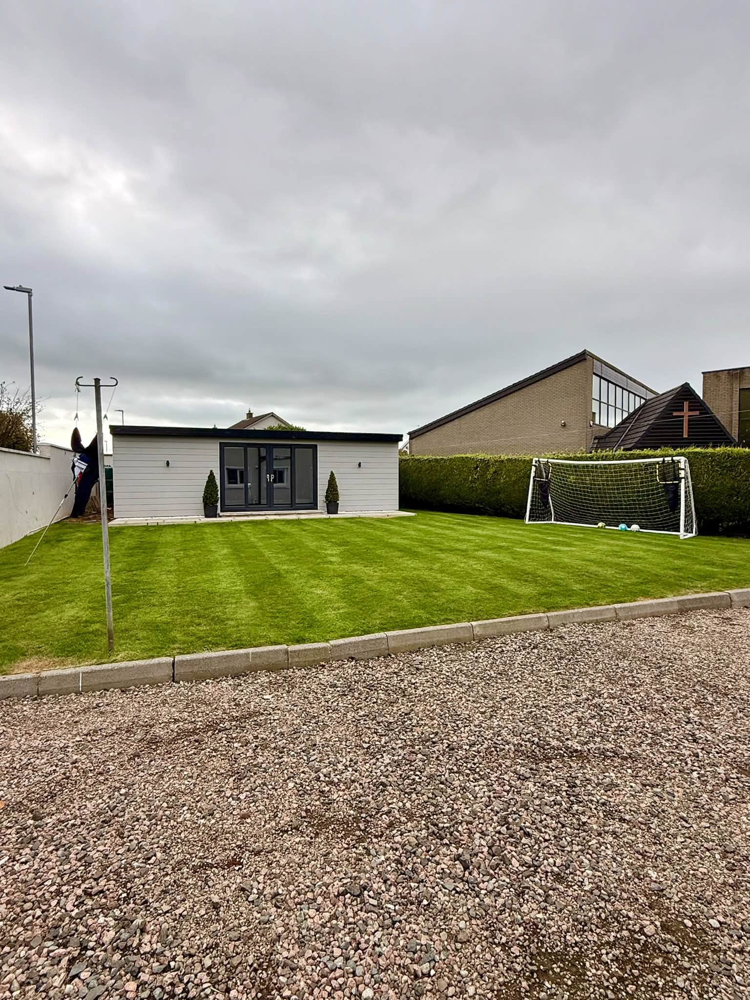
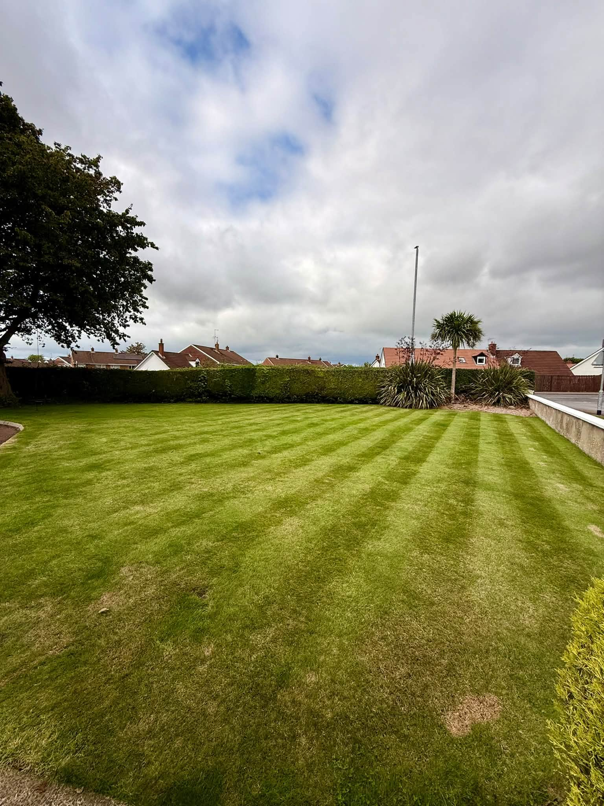
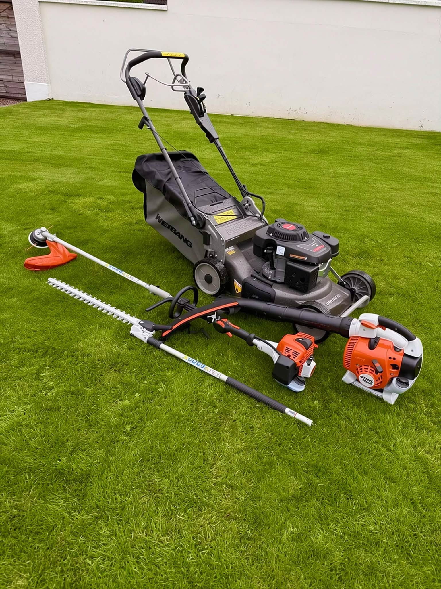
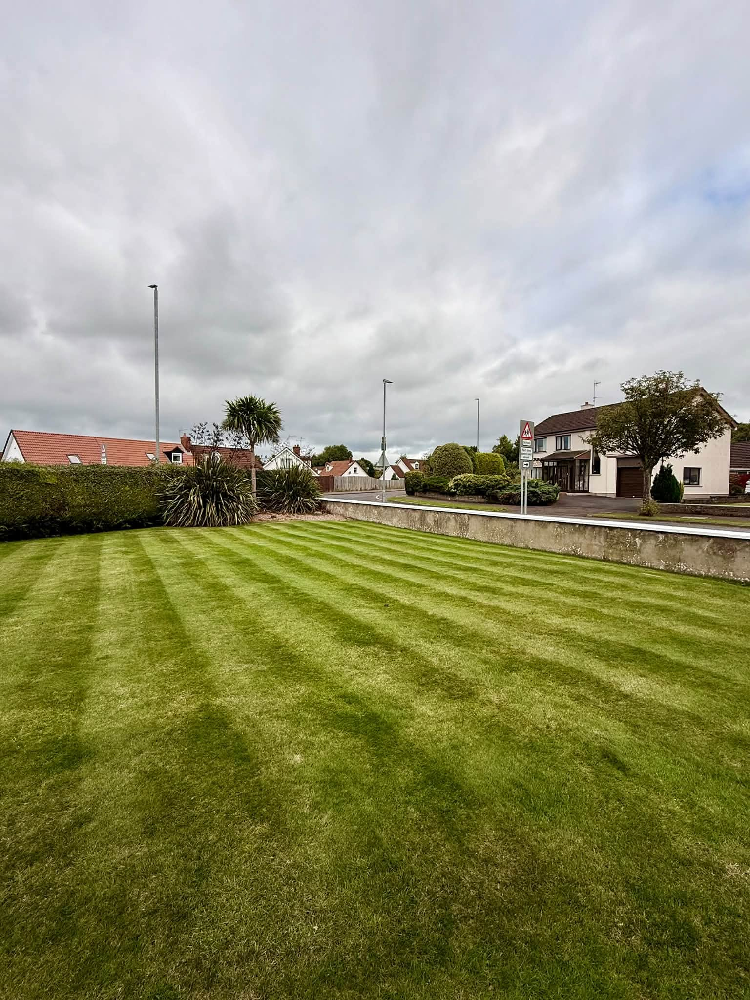
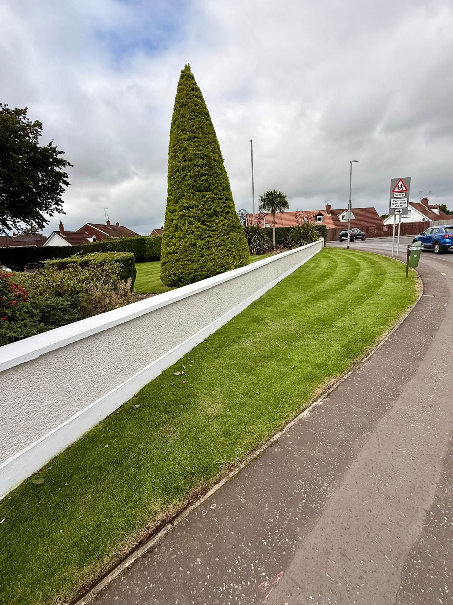

Lawn careMowing and a smart, even finish

ANTRIM & SURROUNDING AREAS
Local gardens.
Brighter living.
Lawn care, hedges and garden maintenance with a finish you can enjoy every day.
LawnsHedgesGarden maintenance
Hedge trimmingNeat boundaries and tidy growth
Garden tidy upsClear, cut back and restore order
Regular maintenanceKeep your garden looking its best
A GARDEN TO COME HOME TO
Care in every corner.
Brantwood Garden Services helps homeowners around Antrim keep outdoor spaces neat and welcoming. From freshly cut lawns to carefully managed hedges, the work speaks through the finish.
Ask for a garden quote →

LAWN & GARDEN CARE
Keep the whole garden looking sharp.
A crisp lawn, clean edges and maintained planting make a noticeable difference. Whether it needs a seasonal tidy or regular attention, get in touch to discuss the work.
Discuss your garden →

BRANTWOOD AT WORK
Real gardens. Real care.
Recent garden maintenance photographs supplied by Brantwood.
A LOCAL RECOMMENDATION
“Delighted with the end result.”
“Keith did a great job with clearing and tidying up both our gardens. A lot of work involved in this but he didn’t stop all day, and was courteous, clean and tidy throughout.”
David · Facebook recommendationABOUT BRANTWOOD
Local work, cared for properly.
Brantwood Garden Services focuses on lawns, hedges and garden maintenance in Antrim and surrounding areas. Keith's customer recommendation highlights a tidy approach, hard work and helpful advice.
01
Neat lawns
Regular mowing and careful finishing.
02
Tidy boundaries
Hedge and edge maintenance.
03
Local service
Working in Antrim and surrounding areas.
GET IN TOUCH
Tell us about your garden.
Fill in the details and WhatsApp will open with your quote request ready to send.
Prefer to speak? 07743 463474
ANTRIM & SURROUNDING AREAS
Ready for a brighter garden?
Contact Brantwood Garden Services for a quote.